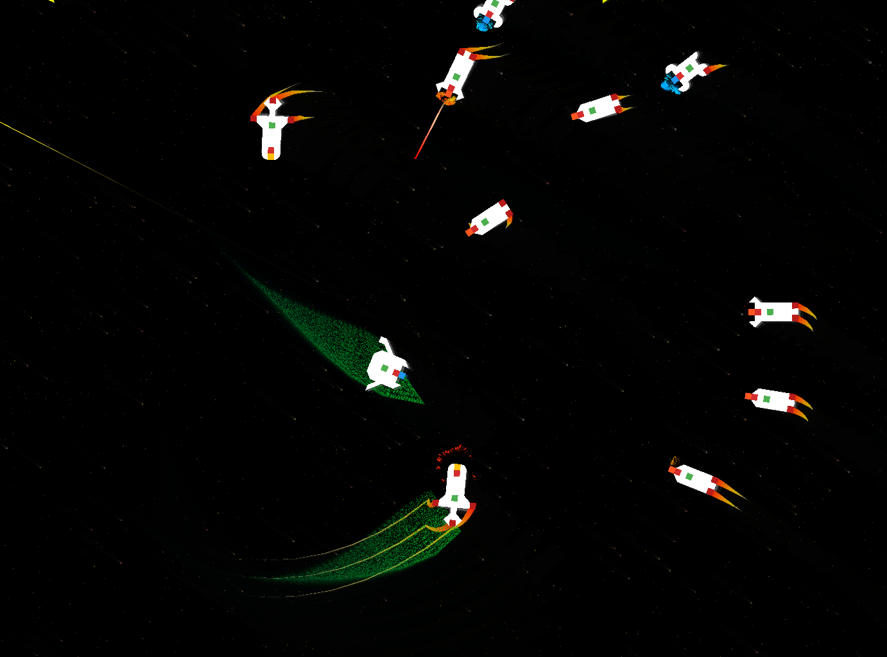
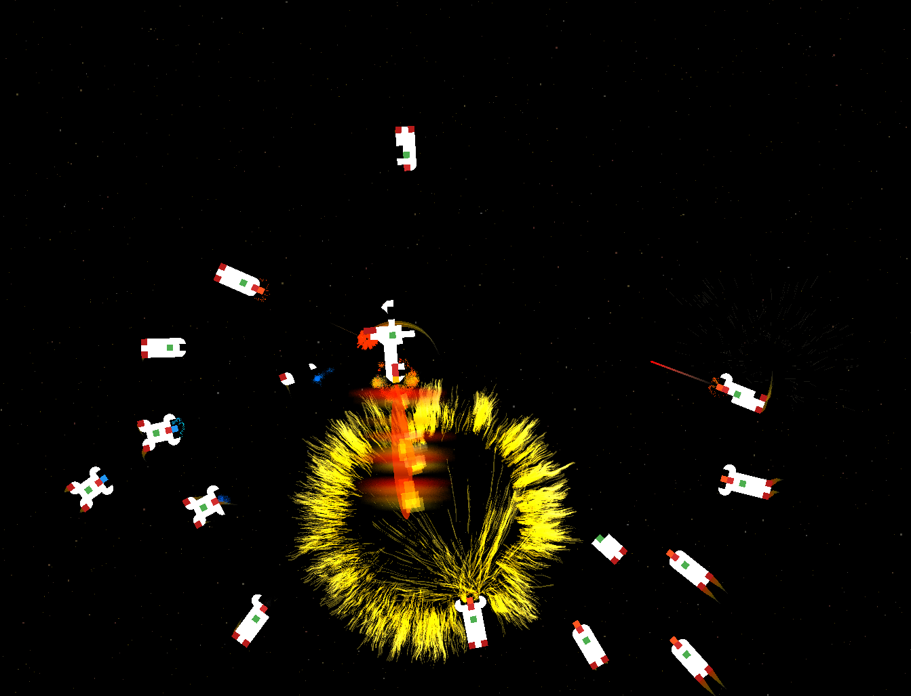
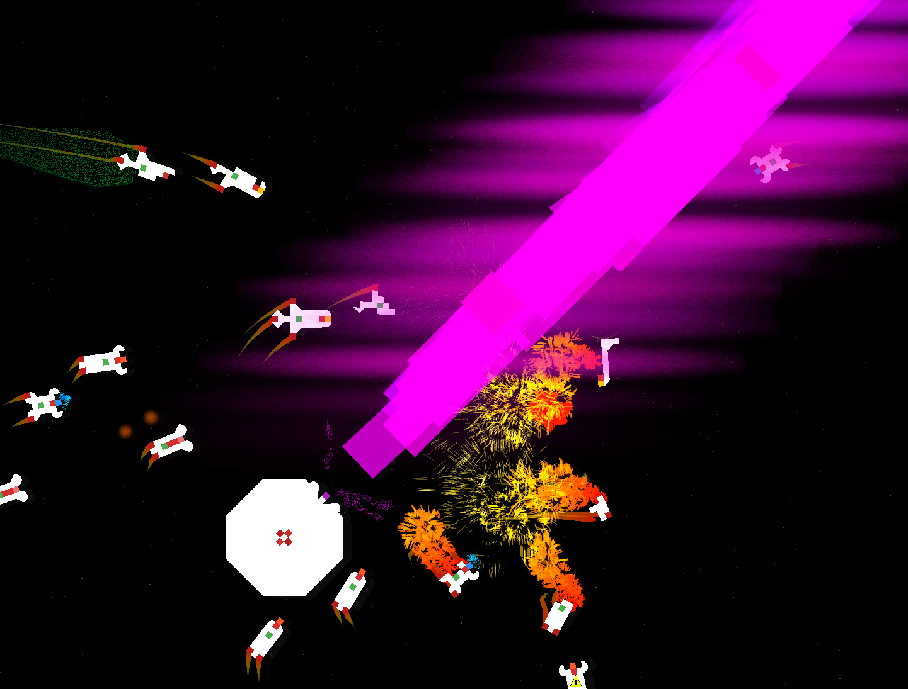

Astronomous is a dynamic 2D shooter where you pilot a lone ship through relentless swarms of enemies. Every pixel of your ship, and those of your enemies, is destructible. Damaged pixels will regenerate over time, unless too many are lost, in which case the entire ship collapses.
Key systems, such as weapons, shields, and warp drives, are tied to specific parts of your ship. If your main cannon is destroyed, you’ll lose the ability to fire; if your warp drive is hit, your escape options disappear temporarily. As you progress, you’ll unlock new ships, each with unique weapons and abilities, allowing for different playstyles.
Astronomous

Space Battleship Game



Design & Development
In developing Astronomous, I focused on creating juicy gameplay with satisfying explosions, weapon effects, and a rewarding progression system. Previous iterations of the game suffered from overly long durations and a lack of clear direction, so I refined the game to be more focused, engaging, and responsive. As players progress, they unlock new ships with unique weapons and abilities, which introduce new playstyles and challenges tailored to individual preferences.